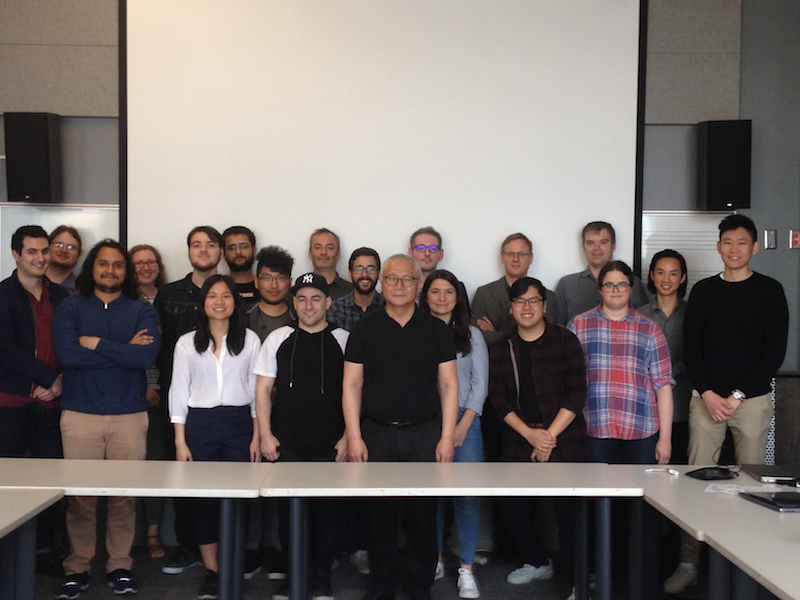

SIMSSA XIV at McGill
Posted by ehopkins on June 25, 2018
At the end of May, we were pleased to host our fourteenth SIMSSA Workshop! Held at McGill University, our guest speakers included Andy Irving (British Library), Laurent Pugin (RISM-Switzerland), Jorge Calvo-Zaragoza (Universitat Politècnica de Valencia, and Andrew Hankinson (Bodleian Libraries at Oxford.) We also heard presentations from our summer students, who are developing SIMSSA software full-time in the DDMAL lab from May through August.
First up, we had Andy Irving present on Unlocking our sound heritage: IIIF AV at the BL.
IIIF may be familiar to many SIMSSA folks at this point – it’s the International Image Interoperability Framework. This technology is what enables MusicLibs, where we serve searchable IIIF manifests of score images that are still hosted at their home institutions. IIIF AV involves extending this concept to audio and video materials, including creating a Universal Player. Andy presented on using IIIF AV at the British Library, highlighting the Save our Sounds project (More here). You can also follow Andy on Twitter @ndyirving and also follow @BLSoundHeritage for more.
Jorge Calvo-Zaragoza presented next on the challenge of developing better OMR technology. A former SIMSSA postdoc, he’s currently a postdoc at the Universitat Politècnica de Valencia. He presented Towards human-aided document processing for Optical Music Recognition. His latest research is moving from a Pixelwise classification method using Convolutional Neural Nets (CNN) to a Patchwise classification method that uses auto-encoders to replace the CNN.
Jorge is also one of the chairs of the new Workshop on Reading Music Systems (WORMS); the first edition will take place as a satellite event to ISMIR 2018 in Paris. They are still accepting paper submissions until 15 July! You can follow him on Twitter @jcalvozaragoza
Andrew Hankinson has been with the SIMSSA Project since before there was a SIMSSA project, first as a PhD student at McGill and then as a Postdoc. He now works at the Bodleian Libraries at Oxford and continues to contribute to SIMSSA as a Collaborator. He presented on IIIF resource delivery at the Bodleian], describing his work towards the upcoming Digital Bodleian 2.0.
This includes digitization workflows, curating data and metadata, long-term digital preservation strategies, as well as user interface and APIs for discovery. You can follow him on Twitter @ahankinson
Our next presenter, Laurent Pugin, works with RISM in Switzerland. He presented on “Music notation online editing” giving an overview of the different options for web-based music editors, including noteflight.com, flat.io, Meise, and Atom MEI tools.
Laurent is of course also the creator of Verovio, which was also featured in the presentation (it plays a part in Atom’s MEI tools, as well as in Craig Sapp’s Verovio Humdrum Viewer, and is part of Neon – more on Neon below.) You can follow Laurent on Twitter @lxpugin
The second half of the workshop featured our summer students. Every summer we hire several McGill students to work as full-time developers in our lab over the summer. They work alongside postdocs and graduate students in our lab, developing the different componenets of the optical music recognition (OMR), search, and analysis processes.
First up, Eric Liu presented his work on Pixel.js, originally developed last year by Ké Zhang and Zeyad Saleh.
Eric has been expanding on their work and integrating Pixel into the overall workflow, so he presented on work he’s done with Martha Thomae, Pixel.js and the Calvo Classifier as a Rodan Workflow.
Minh Anh Nguyen demonstrated her recent work on Updates to RODAN Gamera Interactive Classifier.
Recent work includes its integration into our workflow manager, Rodan, as well as testing from collaborators Inga Behrendt and Jennifer Bain. New functionality for correction has also been added, including deleting and renaming classes, importing and saving classes and subclasses, and deleting glyphs as needed.
Noah Baxter is tackling the pitch finding part of the OMR process this summer.
He’s been working with a staff-finding algorithm to try to find centre-weighting for each note glyph and use that to determine pitch. Check out his slides for more: Heuristic Pitch Finding.
Zoé McLennan and Andrew Tran both worked for us last summer, too, and we’ve added Juliette Regimbal to the Neon team this year. In their presentation, Neon2: Redesigning a web-based MEI neume editor, they talk about integrating Verovio into Neon2 (see Andrew Tran, below).
The original version of Neon was developed before Verovio existed, and used fabric.js as a rendering tool. Verovio is a much more efficient tool for rendering music as it was designed for that purpose. They also talked about plans for Neon3, which incorporates editing tools into the new framework built in Neon2 (see Juliette Regimbal, below).
Finally, the SIMSSA Database is designed as a repository for symbolic music files. Originally conceived as the ELVIS Database as part of the ELVIS Digging into Data grant many years ago, this newest iteration is based on a new data model developed last year by Cory McKay, Andrew Hankinson, Julie Cumming, and Ichiro Fujinaga. In the lab Gustavo Polins Pedro and Andrew Kam have been working on putting this model into practise, as well as updating and improving the user interface and metadata. Below, Andrew Kam discusses querying a relational database for information about chants.
Here, Gustavo describes some experiments done with graph database technology for our project.
You can see their slides at SIMSSA Database
Thanks to everyone who presented!

The next SIMSSA Workshop will be in Leipzig, after IAML! Maybe we’ll see you there!